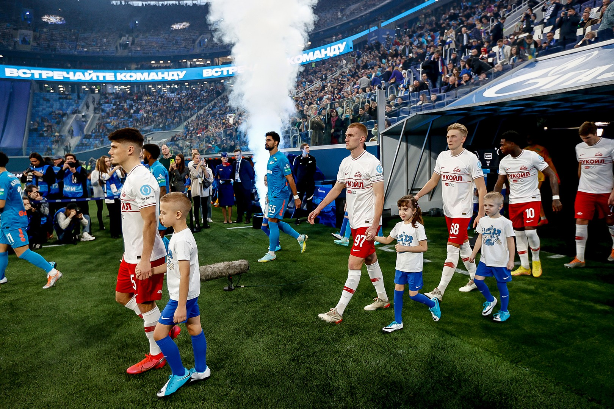
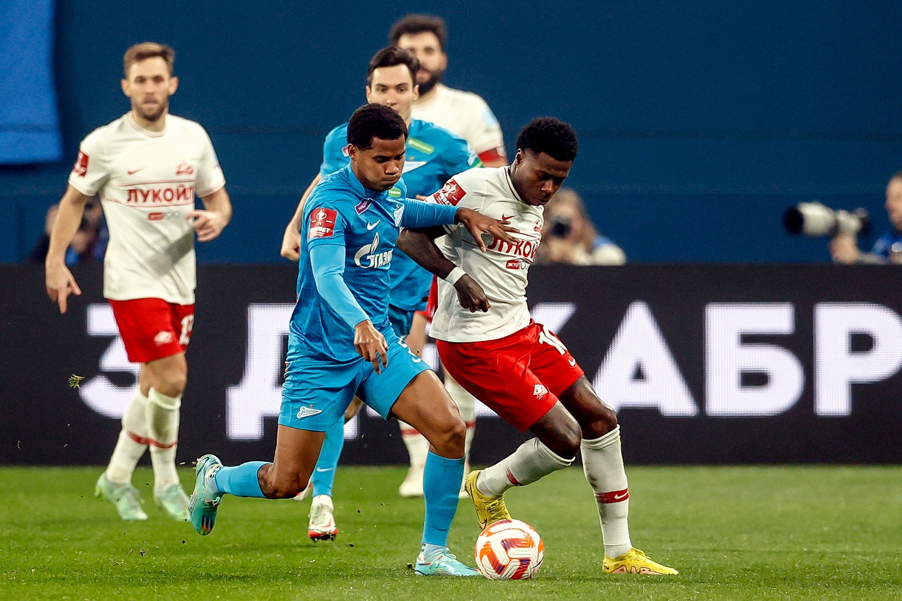
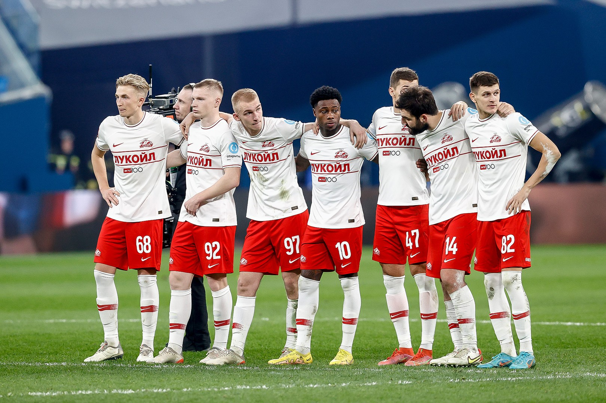

Футбольный клуб Спартак-Москва
«Спартак» сохранил первое место в группе!
Массовая потасовка и серия пенальти в 200-м
матче Промеса

«Зенит» — «Спартак» — 0:0
Пенальти: 4:2.
Санкт-Петербург. Стадион «Газпром Арена». 51 813 зрителей.
Судья: В. Москалёв (Воронеж).
«Зенит»: Иван, Караваев (Мостовой, 61), Чистяков (Бакаев, 90+3), Родригао, Дуглас Сантос (к), Барриос, Кузяев,
Вендел, Клаудиньо (Ерохин, 84), Малком (Мантуан, 84), И. Сергеев (Кассьерра, 46).
Запасные: Одоевский, Королёв, Сутормин, Адамов, Алип, Круговой, Д. Сергеев.
«Спартак»: Максименко, Классен (Рассказов, 75), Хлусевич, Литвинов, Джикия (к), Рыбус (Зиньковский, 90+3), Пруцев (Зорин, 90+3), Денисов, Зобнин, Промес, Соболев (Николсон, 66).
Запасные: Селихов, Ан. Шитов, Мевля, Чернов, Умяров, Мелёшин, Вит. Шитов.
Предупреждения: Джикия (59). Пруцев (63). Классен (64). Николсон (73). Родригао (73). Зобнин (73). Кузяев (73). Рыбус (85). Барриос (90+5).
Удаления: Николсон, Соболев, Селихов, Родригао, Малком, Барриос.
В самом начале игры Родригао, как показалось, сфолил на Соболеве, но арбитр Москалёв нарушения не увидел. Зобнин мощно бил со средней дистанции, однако мяч пролетел сильно выше цели. Ближе к перерыву выскакивал к воротам Малком — Максименко четко сыграл на выходе. Больше и вспомнить нечего.
Вторая половина получилась заметно живее. Пару раз по-настоящему спас Максименко. Опасно бил рядом с дальней «девяткой» Малком. Мостовой едва не поразил ворота ударом головой.
Хватало и жестких стыков. Один из таких с участием Николсона и Родригао едва не привел к массовой потасовке.
«Спартак» периодически отвечал на давление хозяев своими контратаками. Один только Промес, для которого это был 200-й матч в составе нашего клуба, несколько раз здорово цеплялся за мяч на чужой половине. Активно вошел в игру Николсон: ямаец не только «бодался» с оппонентами, но и заставил «Газпром Арену» пару раз облегченно выдохнуть после своих опасных ударов.
При этом красно-белые в целом никуда не спешили и грамотно довели дело до нужного результата.
А когда завершилась пятая, последняя добавленная минута, драка все-таки случилась. Все началось со стыка Промеса с Барриосом, а также обмена ударами все тех же Родригао и Николсона. Причем на этот раз куда более отчаянными. Бились все, включая запасных и персонал. В итоге после долгой паузы Москалёв удалил эту «парочку», а также принявших особо активное участие в событиях Соболева, Малкома, Барриоса и запасного Селихова.
С учетом победы «Крыльев Советов» над «Факелом» предусмотренная по регламенту серия пенальти уже никак не могла повлиять на расклад в группе.
У «Спартака» не забили Зиньковский и Денисов (с их ударами справился Иван), а у «Зенита» осечку допустил только Дуглас Сантос (он пробил выше).
Теперь «Спартак» продолжит борьбу за трофей двухматчевым противостоянием с одним из клубов РПЛ, занявших второе место в группе, а «Зенит» остался третьим и отправляется в «Путь регионов».
